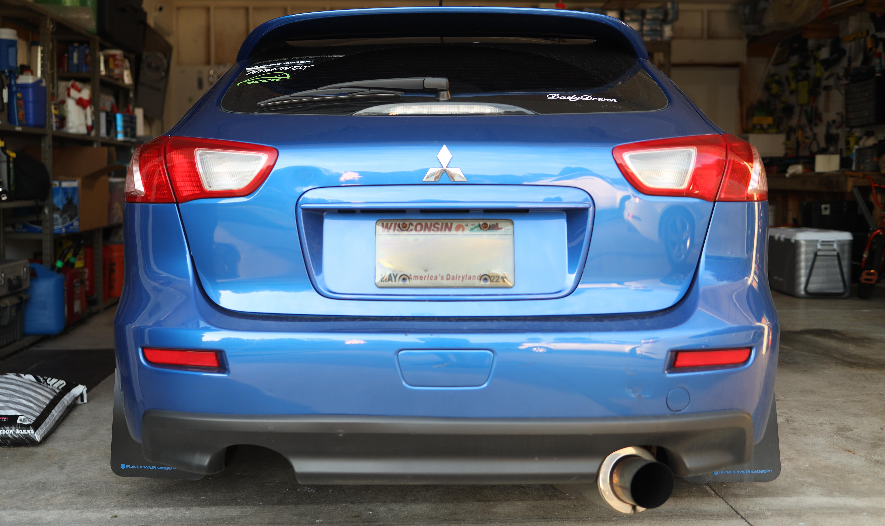
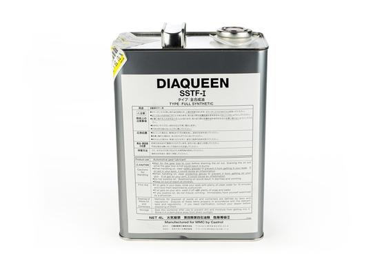
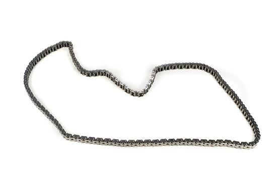
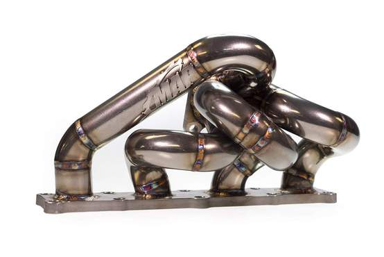

<!DOCTYPE html>
<html>
    <head>
        <meta charset="utf-8">
        <title>Product Reviews</title>
        <link rel="preconnect" href="https://fonts.googleapis.com">
        <link rel="preconnect" href="https://fonts.gstatic.com" crossorigin>
        <link href="https://fonts.googleapis.com/css2?family=Roboto:wght@400;900&display=swap" rel="stylesheet">
        <link rel="stylesheet" type="text/css" href="css/styles.css">
    </head>
</html>
<body>
    <header>
        <h1>Product Reviews from <a href="https://maperformance.com" title="Link to MAPerformance website">MAPerformance</a></h1>
    </header>
    <main>
        <figure>
            <div class="frame">
            
            <figcaption>
                My 2010 Mitsubishi Ralliart Sportback
            </figcaption>
            </div>
        </figure>
        <br>
        <p id="title-section">
            As a Mitsubishi owner, I know that garage work is routinely needed to keep an owner's Mitsubishi in top condition.<br>
            Time and time again, whenever parts are needed for my Mitsubishi, I always turn to MAPerformance to find deals on parts.<br><br>
            Below are my reviews of parts I've purchased from MAPerformance.
        </p>

        <h2>My Product Reviews</h2>
        <div class="review">
            <h3>OEM DiaQueen SST Transmission Fluid</h3>
            
            <p>I purchased two 4 Liter jugs of OEM Diaqueen SST Transmission Fluid <br>
                from MAPerformane. Since doing a transmission fluid change with <br>the oem
                fluid, my car has been shifting like new!
            </p>
        </div>
        <br>
        <div class="review">
            <h3>OEM Mitsubishi Timing Chain | Updated Chain</h3>
            
            <p>My Ralliart had the old type of timing chain in it and had been running<br> for about 130k miles.
                Right at the 130k mark though, my dash gave me the <br>triangle of death
                (Red triangle with '!' in it) which meant the car was reading that <br>
                the timing was off and there's a stretch in the timing chain. I'm SURE the chain was<br>
                stretched well before the light began to appear. I was able to get the timing chain and <br> 
                all the parts I needed for the replacement (tensioners, guides, oil filter) all here on MAPerformance<br>
                and now my engine is running smooth! (When the old chain was removed there was about almost an<br>
                inch in slack so i'm very glad I was able to get such a high quality oem part on MAPerformance!
            </p>
        </div>
        <br>
        <div class="review">
            <h3>Evo X MAP Exhaust Manifold</h3>
            
            <p>An exhaust manifold was a must have for me after I acquired a Evo X 4B11T Turbo.<br>
                This exhaust manifold runs as great as it looks and gives the much needed air flow<br>
                to my car's turbo. Also to mention, it gives better response times out of the Turbo.
            </p>
        </div>
    </main>
    <footer class="footer">
        <p>Coded by <a href="https://github.com/daledezma/itdev-160" title="Link to my github repo">Daniel Ledezma</a></p>
    </footer>
</body>